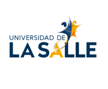

Programa académico
Agenda del encuentro
Haz clic en el título de cada proyecto para ver su resumen y sus objetivos.
No se encontraron proyectos con ese criterio.

Haz clic en el título de cada proyecto para ver su resumen y sus objetivos.
Haz clic en una persona para ir a su proyecto.